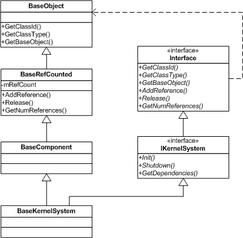

NoesisEngine Class Hierarchy
NoesisEngine is object-oriented with the idea of extensibility as one of their main characteristics.
There are 3 types of object in Noesis:
- Simple classes. They don't need to inherit from any class and can be created in dynamic or stack memory. They support reflection information but can't be polymorphic. Reflection information does not add any extra size to the basic types. [source:NoesisSDK/trunk/Src/Packages/Math/VectorMath/Include/NsMath/Vector.h Vector3f] is an example of basic type.
- Polymorphic classes. Classes inheriting from BaseObject. They can be created in dynamic or stack memory. They support polymorphic reflection information. Reflection information does not add any extra size apart from the vtable from BaseObject. This type of objects is not commonly used by NoesisEngine packages, but can be useful when you don't want a full Noesis Component.
- Components
Base classes and interfaces
- BaseObject (NsCore/BaseObject.h)
Base class for every polymorphic object in NoesisEngine. Provides information about the type of the class.
- BaseRefCounted (NsCore/BaseRefCounted.h)
Base class that implements objects with reference counting.
- BaseComponent (Include/NsCore/BaseComponent.h)
Base class for every component defined in NoesisEngine. The most generic Ptr that can be defined is Ptr<BaseComponent>.
- Interface (Include/NsCore/Interface.h)
Base class for every interface in NoesisEngine.